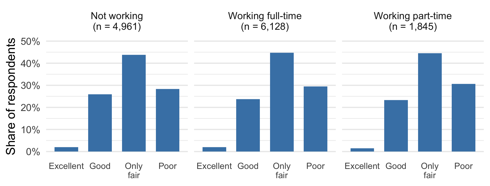

| Purpose | Loans | Default rate |
|---|---|---|
| Small business | 3,191 | 25.8% |
| Debt consolidation | 49,409 | 16.5% |
| Home improvement | 5,856 | 12.2% |
TEMBA Statistics 2026
The LendingClub subset gives these historical default rates.
| Purpose | Loans | Default rate |
|---|---|---|
| Small business | 3,191 | 25.8% |
| Debt consolidation | 49,409 | 16.5% |
| Home improvement | 5,856 | 12.2% |
The overall rate is 16.5%. Which purposes change our assessment of default?
Two variables are independent when learning one does not change the distribution of the other.
\[ \Pr(X=x\mid Y=y)=\Pr(X=x). \]
For discrete variables, this must hold for every \(x\) and every conditioning value \(y\) with positive probability. The same property holds in the reverse direction.
For discrete variables, independence is equivalent to
\[ \Pr(X=x,Y=y)=\Pr(X=x)\Pr(Y=y) \]
for every pair of outcomes.
Each interior cell must equal its row margin times its column margin. One failed equality establishes dependence.
A system assigns free shipping independently of a discount.
| Shipping offer | Discount | No discount | Total |
|---|---|---|---|
| Free shipping | ? | ? | 0.25 |
| No free shipping | ? | ? | 0.75 |
| Total | 0.40 | 0.60 | 1.00 |
Complete the model. What should the probability of receiving both offers be?
An engineer proposes probability 0.20 for receiving both offers, keeping the same margins.
| Shipping offer | Discount | No discount | Total |
|---|---|---|---|
| Free shipping | 0.20 | ? | 0.25 |
| No free shipping | ? | ? | 0.75 |
| Total | 0.40 | 0.60 | 1.00 |
Give two verdicts: can this be a valid model, and can it satisfy independence? Complete the remaining cells to justify your answer.
| Shipping offer | Discount | No discount | Total |
|---|---|---|---|
| Free shipping | 0.10 | 0.15 | 0.25 |
| No free shipping | 0.30 | 0.45 | 0.75 |
| Total | 0.40 | 0.60 | 1.00 |
The conditional discount probabilities are \(0.10/0.25=0.40\) and \(0.30/0.75=0.40\).
Learning the shipping offer leaves the discount distribution unchanged.
| Shipping offer | Discount | No discount | Total |
|---|---|---|---|
| Free shipping | 0.20 | 0.05 | 0.25 |
| No free shipping | 0.20 | 0.55 | 0.75 |
| Total | 0.40 | 0.60 | 1.00 |
All cells are nonnegative and sum to one, with the required margins.
But \(0.20\ne0.25(0.40)\). The conditional discount probabilities are 0.80 with free shipping and about 0.267 without it.
| Purchase | No purchase | Total | |
|---|---|---|---|
| Store visit | 0.18 | 0.22 | 0.40 |
| No store visit | 0.12 | 0.48 | 0.60 |
| Total | 0.30 | 0.70 | 1.00 |
Purchases can also occur online. Find one numerical comparison that establishes dependence.
Independence would require
\[ \Pr(\text{visit and purchase})=0.40(0.30)=0.12. \]
The model assigns 0.18 to that cell, so store visits and purchases are dependent.
We do not need to check the remaining cells once one equality fails.
The 2025 SHED survey records national economic ratings. Percentages are unweighted.

How much does the distribution change across employment groups?
Each row reports percentages within an employment group; \(n\) is its sample size.
| Employment status | n | Excellent | Good | Only fair | Poor |
|---|---|---|---|---|---|
| Not working | 4,961 | 2.0% | 25.9% | 43.8% | 28.3% |
| Working full-time | 6,128 | 2.0% | 23.7% | 44.8% | 29.5% |
| Working part-time | 1,845 | 1.5% | 23.4% | 44.6% | 30.6% |
| Overall | 12,934 | 1.9% | 24.5% | 44.4% | 29.2% |
The largest difference from an overall category share is 1.4 percentage points. Does similarity establish exact population independence?
Sample proportions generally differ even when a population model has independence. Rounding can also conceal differences.
The SHED table suggests that employment status tells us relatively little about these ratings in this extract. It does not establish exact independence in the population.
For quantitative variables, independence likewise requires the entire conditional distribution to stay unchanged: its location, spread, and shape.